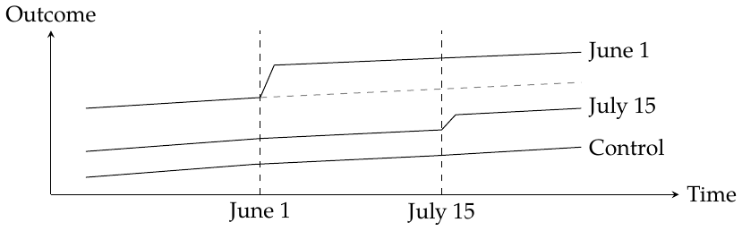
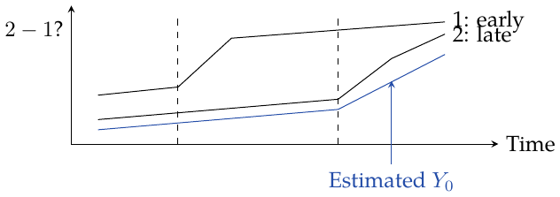

Chapter 24: The Difference-in-Differences Saga
Panel data and two-way fixed effects
Panel data: repeatedly observing the same unit over time. Here we compare units across time and across regions.

The dashed gray path is the TWFE counterfactual.
Group units by intervention date \(g\).
Intervention start date \(\textcolor{black}{\longrightarrow}\) Cohort label \(g\)
Taking \(t=g\) as the first treated period, the cohort-time target is \[\operatorname{ATT}(g,t)=E[Y_t(g)-Y_t(\infty)\mid G=g],\qquad t\ge g.\] Here \(Y_t(\infty)\) is the outcome without adoption. Averaging cohort-time effects requires specifying the weights.
The model is \[\mathrm{Install}_{it}=\tau D_{it}+\gamma_i+\theta_t+e_{it}.\] Here \(i\) denotes a unit, \(t\) time, and \(e_{it}\) noise. \(\gamma_i\) captures unit differences and \(\theta_t\) common time shocks. Estimating by OLS gives two-way fixed effects (TWFE): jointly absorb time-invariant unit characteristics and common time effects. Unit-specific, time-varying confounding is not absorbed by these two effects alone.
Two groups and two periods \(\textcolor{red}{\longrightarrow}\) The TWFE coefficient equals the DiD contrast.
TWFE outcome model \(\textcolor{black}{\longrightarrow}\) Residualize outcome and treatment against the same fixed effects.
For a balanced panel, \(z\in\{\mathrm{Install},D\}\): \[\widetilde{\mathrm{Install}}_{it}=\tau\widetilde D_{it}+e_{it}.\] \[\begin{aligned} \widetilde z_{it}&=z_{it}-\underbrace{\bar z_{i\cdot}}_{\textcolor{red}{\text{time average}}}-\underbrace{\bar z_{\cdot t}}_{\textcolor{red}{\text{unit average}}}+\bar z_{\cdot\cdot},\\ \bar z_{i\cdot}&=\frac1T\sum_{s=1}^Tz_{is},\qquad \bar z_{\cdot t}=\frac1N\sum_{j=1}^Nz_{jt},\qquad \bar z_{\cdot\cdot}=\frac1{NT}\sum_{j=1}^N\sum_{s=1}^Tz_{js}. \end{aligned}\] Adding the grand mean makes the row and column means zero. If that constant is omitted, an intercept in the final regression absorbs the shift; without an intercept it can affect the slope. For an unbalanced panel, use the fixed-effect projection.
Death: Failures over Effect Heterogeneity
With heterogeneous treatment effects, a TWFE coefficient need not equal the ATT we want. Start with the static model \[y_{it}=\tau D_{it}+\gamma_i+e_{it}.\] 1. Functional form. A common treatment coefficient, linearity in included covariates, and additive fixed effects. In particular, a single \(\tau\) rules out effects that change with time since treatment.
2. Exogeneity and timing. The static regression motivates checking strict exogeneity, \[E[e_{it}\mid D_{i1},\ldots,D_{iT},\gamma_i]=0,\] and the related issues of anticipation, unobserved time-varying confounders, carryover from past treatment, and feedback from past outcomes to current treatment. These checks are connected to, but not interchangeable with, the parallel-trends and no-anticipation restrictions used for DiD. Dynamic treatment effects require an appropriate model and target.
Suppose the response grows gradually: \(0.1,0.2,\ldots\), day by day. Label the early-treated group \(1\), the late-treated group \(2\), and the never-treated group \(3\). TWFE combines several \(2\times2\) DiD comparisons: \[1-3:\ \checkmark,\quad 2-3:\ \checkmark,\quad 1-2:\ \checkmark,\quad 2-1:\ \text{??}\] The second group is the control. In \(1-2\), use the window before group \(2\) is treated. The questionable comparison is \(2-1\): group \(1\) is already treated.
My intuition: when the early-treated group is used as the control, its evolving treatment effect is mistaken for part of the untreated trend. The blue curve shows the resulting estimate of \(Y_0\) for the late-treated group.

Goodman-Bacon’s decomposition is summarized as \[\operatorname*{plim}_{n\to\infty}\widehat\tau^{\mathrm{TWFE}} =\mathrm{VWATT}-\Delta\mathrm{ATT}.\]
Bias from changes in ATT over time \(\textcolor{blue}{\longrightarrow}\) \(\Delta\mathrm{ATT}\)
In the comparison drawn above, an increasing effect contaminates the control trend and biases the contrast downward; a decreasing effect reverses this direction. With negative effects that become more negative, even the estimated sign can be wrong! The aggregate TWFE discrepancy also depends on cohort effects and the comparison weights; this picture does not determine its sign in every design.
Event-study design
Replace the single treatment indicator with event-time indicators, omitting \(k=-1\) as the reference period: \[\begin{aligned} Y_{it}={}&\alpha_i+\theta_t+\beta_{<-K}\mathbf1\{t-G_i<-K\}\\ &+\sum_{k=-K}^{-2}\beta_kD_{it}^k+\sum_{k=0}^{L}\beta_kD_{it}^k +\beta_{>L}\mathbf1\{t-G_i>L\}+e_{it},\\ D_{it}^k={}&\mathbf1\{t-G_i=k\}. \end{aligned}\]
\(D_{it}^{k}=\mathbf1\{t-G_i=k\}\) \(\textcolor{black}{\longrightarrow}\) One in relative period \(k\), zero otherwise.
Measure how far a unit is from treatment start \(\textcolor{blue}{\longrightarrow}\) The event-time indicator \(D_{it}^{k}\).
All event-time indicators are zero for never-treated units. This is only a partial improvement: with staggered adoption and heterogeneous effects, these lead/lag coefficients can still mix effects from other relative periods. Causal interpretation requires valid cohort comparisons.
Enlightenment: a flexible functional form
First try a separate treatment effect for every unit and time: \[Y_{is}=\alpha_i+\theta_s+ \sum_{j=1}^N\sum_{t=1}^T\tau_{jt}\mathbf1\{i=j\}\mathbf1\{s=t\}D_{is}+e_{is}.\] Too many parameters! Group units by adoption cohort instead: \[Y_{is}=\alpha_i+\theta_s+ \sum_{g\in\mathcal G}\sum_{t=1}^T\tau_{gt}\mathbf1\{G_i=g\}\mathbf1\{s=t\}D_{is}+e_{is}.\] This reduces the number of effect parameters from unit-by-time to cohort-by-time. The explicit indicators show which coefficient applies to observation \((i,s)\).
Remove pre-treatment and control-cohort effect coefficients: \[Y_{is}=\alpha_i+\theta_s+ \sum_{g\in\mathcal G_{\mathrm{tr}}}\sum_{t\ge g}\tau_{gt}\mathbf1\{G_i=g\}\mathbf1\{s=t\}+e_{is}.\] Here \(\mathcal G_{\mathrm{tr}}\) contains cohorts treated in the observation window. Controls must remain untreated in the comparison window: never-treated units, or appropriately selected not-yet-treated units. An earlier adoption date alone does not make a cohort a control. 1
Manually create cohort dummies: \((0,1),(1,0),\ldots\) \(\textcolor{blue}{\longrightarrow}\) The cohort-by-time treatment terms.
Two points remain:
Treatment effects may change over time; the earlier constant-effect model ignored this.
DiD and TWFE still need the relevant parallel-trends restriction. This is a very strong restriction.
The chapter’s displayed sums and its ordering of control-cohort labels are schematic. Its implemented example uses cohorts untreated during the observed window as controls.↩︎